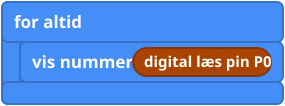
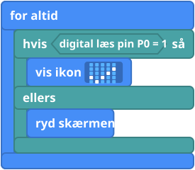
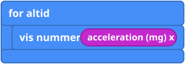

Hvad er det?
En sensor er en del, der måler noget og fortæller micro:bit'en det med et tal. Nogle giver kun 0 eller 1 (tændt eller slukket). Andre giver mange forskellige tal.
| Del | Slags | Den fortæller dig |
|---|---|---|
| PIR-sensor | Tændt eller slukket | 1, når noget varmt, som dig, bevæger sig tæt på. |
| Stødsensor | Tændt eller slukket | Om der bliver trykket på den lige nu. |
| Potentiometer | Mange værdier | Hvor langt knappen er drejet, fra 0 til 1023. |
| Jordfugtsensor | Mange værdier | Hvor våd jorden er, som et tal. |
| ADKeypad | Mange værdier | Én pin, og hver tast giver et forskelligt tal. Brug "vis det" (nedenfor) til at finde dem. |
| Indbygget: vip, temperatur, lys | Mange værdier | Ingen ledninger. Brug bare blokkene. |
Sæt delen i en pin (se Pins), og aflæs den med den blok, der passer til dens slags. OLED-skærmen kræver en udvidelse (extension) i MakeCode, som Tinkercademys vejledninger forklarer.
Blokkene
digital læs pin (digital read pin) og analog læs pin (analog read pin) ligger i Pins under Avanceret (Advanced). De indbyggede ligger i Input.


Små eksempler



Prøv det her
- Find ud af, hvad PIR-sensoren måler, når du står stille, og når du vinker.
- Få et hjerte til at dukke op, når PIR-sensoren ser dig.
- Find tallene for tør og våd jord, og lav så et ansigt, der er trist, når jorden er tør.
- Vip micro:bit'en for at finde ud af, hvilken vej der giver et negativt tal.
Typiske fejl
- Tallet er altid 0 eller altid 1023. Tjek pin-nummeret. En del, der giver mange værdier, virker bedst på pin 0, 1 eller 2.
- PIR-sensoren reagerer på mærkelige tidspunkter. Den kan have brug for op til et minut til at falde til ro, efter at strømmen er sat til. Vent, og test så.
- Lysniveau viser 0 i starten. Aflæs det igen lidt efter.
- Målingen hopper rundt. Der er ikke noget sat i den pin, eller kablet sidder løst. Hopper den stadig, så sæt en blok sæt pull pin (set pull) (i Pins, under "... mere") ind i når programmet starter for at holde pinnen stabil.
Koden skrevet som tekst
JavaScript: pins.digitalReadPin(DigitalPin.P0)
pins.analogReadPin(AnalogPin.P1)
input.acceleration(Dimension.X)
Python: pins.digital_read_pin(DigitalPin.P0)
pins.analog_read_pin(AnalogPin.P1)
input.acceleration(Dimension.X)
V1 og V2
Blokkene virker på begge. Blokken lysniveau bruger LED-lysene som lyssensor, så den virker bedst, når lysene ikke viser et billede.
Lærernoter
- Tid: 40 til 60 minutter. Hver sensor kan være sin egen korte aktivitet.
- Det lærer de: at måle, digital over for analog, og at finde en god grænseværdi ved at teste.
- Tjek på jeres kit: hvad hver del måler (1 eller 0), er forskelligt fra sensor til sensor, og derfor er "vis det"-tricket nyttigt.
- Billederne af blokkene er forenklede tegninger. Tjek de rigtige blokke i MakeCode.